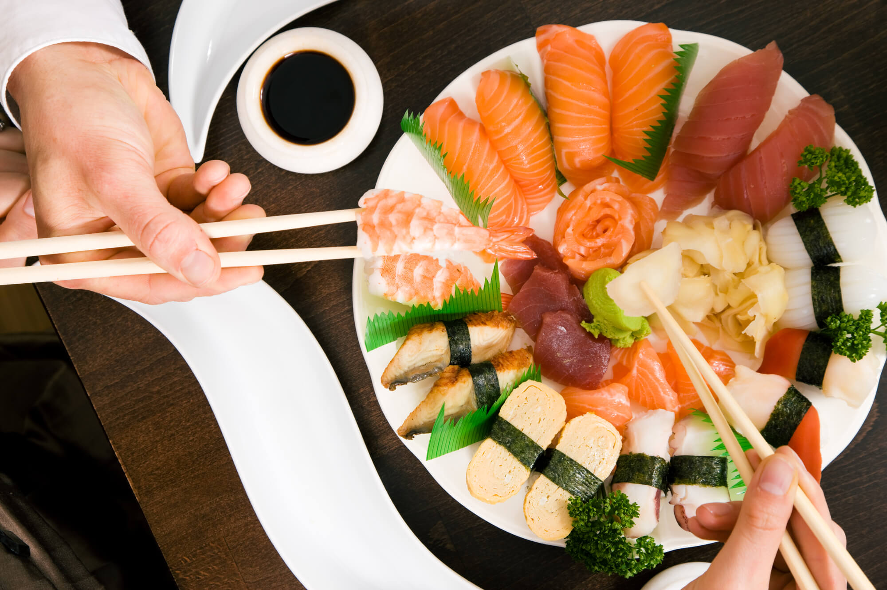
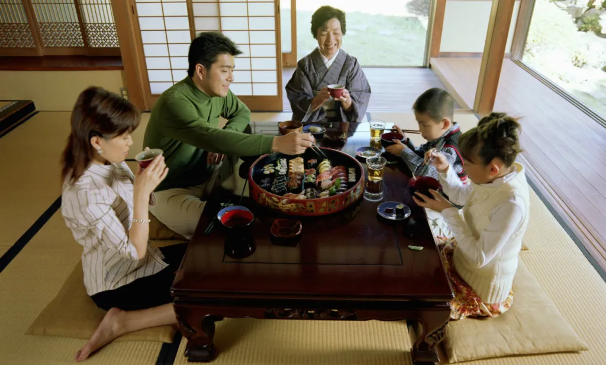
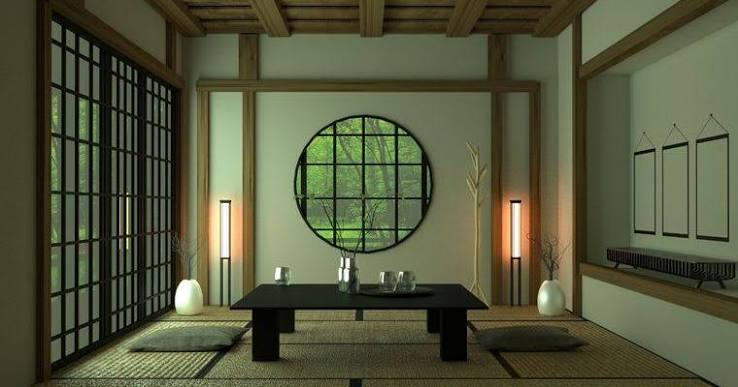

A Fūdo wīku, conhecida no Ocidente como a Semana da Comida Japonesa, é uma tradição milenar que busca reverenciar a culinária local. Presente no Brasil desde meados do século XX, ela está completando 80 anos em nosso território!
Venha conosco, na semana do dia 08/08/2026, participar deste festival incrível que contará com muita diversão, imersão na cultura japonesa e o principal: muita comida!